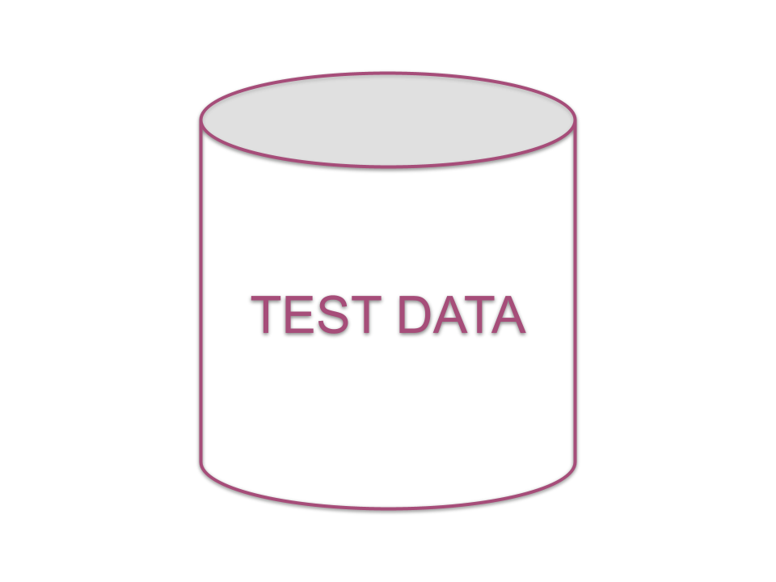

# Practices for Test Environments --- <!-- .slide: data-markdown="" --> # toc 1. [intro](#intro) 1. [foundations](#foundations) 1. [proposal](#proposal) 1. [takeaways](#takeaways) --- <!-- .slide: id="intro" --> ## Test Environments - mitigate <span class="bold-blue">risk</span> - provide a safe place to <span class="bold-blue">experiment</span> <!-- .element: class="bullet-dots" --> --- ## Test Environments - too many reinforce/require <span class="bold-blue">slow</span> & <span class="bold-blue">inefficient processes</span> - too few artificially block and create <span class="bold-blue">confusion</span> and <span class="bold-blue">traffic jams</span> - <span class="bold-blue">poor management</span> injects both (along with other problems) <!-- .element: class="bullet-dots" --> --- ## Let’s reboot - throw out old assumptions and history - what are our <span class="bold-blue">foundational principles</span>? <!-- .element: class="bullet-arrow" --> --- ## System Architecture <span class="subheading">(for context)</span> <ul class="bullet-arrow"> <li> <span>backend</span> <img src="../media/api.png" alt="Alt Text" width="25" style="width: 25px;"> </li> <li> <span>data warehouse</span> </li> <li> <span>clients</span> <ul class="bullet-arrow"> <li> <img src="../media/web.png" alt="Alt Text" width="25" style="width: 25px;"> </li> <li> <img src="../media/ios.png" alt="Alt Text" width="25" style="width: 25px;"> </li> <li> <img src="../media/android.png" alt="Alt Text" width="25" style="width: 25px;"> </li> </ul> </li> </ul> --- <!-- .slide: id="foundations" --> ## Foundational Principles ### <span class="subheading">(SDLC)</span> - all teams should be able to <span class="bold-green">validate</span> changes prior to launching in production - all teams should be able to safely <span class="bold-green">debug</span> production issues <!-- .element: class="bullet-arrow" --> --- ## Foundational Principles ### <span class="subheading">(coordination)</span> - <span class="bold-green">coordination</span> between teams, branches, and features should be minimized <span class="bold-orange subnote">(but will undoubtedly happen)</span> <!-- .element: class="bullet-arrow" --> --- ## Foundational Principles ### <span class="subheading">(code & deploy)</span> - mainline codebases should be kept <span class="bold-green">clean</span> from untested changes <span class="bold-orange subnote">(as best as possible)</span> - deployments should be co-owned between ENG/Ops, and must be delivered in under <span class="bold-green">10 minutes</span> <!-- .element: class="bullet-arrow" --> --- ## Foundational Principles ### <span class="subheading">(architecture)</span> - clients <span class="bold-green">require</span> the backend - backend does not <span class="bold-green">need</span> a client - pre-production environments should be at <span class="bold-green">parity</span> with production <span class="bold-orange subnote">(as best as possible)</span> <!-- .element: class="bullet-arrow" --> --- <!-- .slide: id="proposal" --> # PROPOSAL --- ## Containers ### <span class="subheading">what is a container?</span> - _software that packages code and its dependencies so the application runs quickly and reliably <span class="bold-green">across computing environments</span>_ <!-- .element: class="bullet-arrow" --> --- ## Containers ### <span class="subheading">what does that mean?</span> - a container can be spun up <span class="bold-blue">anywhere</span> at <span class="bold-blue">anytime</span> with the same code/dependencies as Production/STG/QA - allowing us to test changes _<span class="bold-green">in isolation</span>_ <!-- .element: class="bullet-arrow" --> --- ## Backend<img src="../media/api.png" alt="Alt Text" width="25" style="width: 35px;"> Containers ### ### <img src="../media/green-stick.png" alt="Alt Text" width="25" style="width: 75px;"> - container for <span class="bold-blue">non-calling/non-texting</span> user stories <!-- .element: class="bullet-arrow" --> --- ## Backend<img src="../media/api.png" alt="Alt Text" width="25" style="width: 35px;"> Containers ### ### <img src="../media/green-stick.png" alt="Alt Text" width="25" style="width: 75px;"> - <span class="bold-blue">any branch</span> can be deployed here <span class="bold-orange subnote">(in practice, mostly feature branches)</span> - deploy on-demand <!-- .element: class="bullet-arrow" --> --- ## Backend<img src="../media/api.png" alt="Alt Text" width="25" style="width: 35px;"> Containers ### <span class="subheading">work outstanding</span> - publish <span class="bold-blue">documentation</span> to set up & use a local container - team mindset shift - local/isolated verification as a <span class="bold-blue">complement</span> to existing regression practice <!-- .element: class="bullet-arrow" --> --- # QA Environment ## --- ## ### <img src="../media/green-stick.png" alt="Alt Text" width="25" style="width: 75px;"> - environment for verification of <span class="bold-blue">calling/texting</span> user stories <!-- .element: class="bullet-arrow" --> --- ## ### <img src="../media/green-stick.png" alt="Alt Text" width="25" style="width: 75px;"> - <span class="bold-blue">any branch</span> can be deployed here <span class="bold-orange subnote">(in practice, mostly feature branches)</span> - should be mostly feature branches - dev or other integrated branches may cause issues - deploys must be <span class="bold-blue">coordinated</span> - 1 hour mininimum, 4 hour maximum <!-- .element: class="bullet-arrow" --> --- # STG Environment ## --- ## ### <img src="../media/green-stick.png" alt="Alt Text" width="25" style="width: 75px;"> - prod <span class="bold-blue">debugging</span> - mainline code branch or production version only - final release <span class="bold-blue">validation</span> <!-- .element: class="bullet-arrow" --> --- ## ### <img src="../media/green-stick.png" alt="Alt Text" width="25" style="width: 75px;"> - default for client <span class="bold-blue">integration</span> testing - <span class="bold-blue">automated</span> e2e tests <!-- .element: class="bullet-arrow" --> --- ## ### <img src="../media/green-stick.png" alt="Alt Text" width="25" style="width: 75px;"> - <span class="bold-blue">monitor</span> similar to production - <span class="bold-blue">logging systems</span> for metrics, feature performance as production - automated alerts for critical incidents <!-- .element: class="bullet-arrow" --> --- ## ### <img src="../media/green-stick.png" alt="Alt Text" width="25" style="width: 75px;"> - <span class="bold-green">backend</span> - execute <span class="bold-blue">integration</span> tests against backend containers (parallelized?) <!-- .element: class="bullet-arrow" --> --- ## ### <img src="../media/green-stick.png" alt="Alt Text" width="25" style="width: 75px;"> - <span class="bold-green">clients</span> - <span class="bold-blue">stubbed</span> integration with backend for daily/regular runs - full e2e nightly against STG <!-- .element: class="bullet-arrow" --> --- ##  - <span class="bold-blue">invest</span> in automation of weekly full production data snapshots (masked) <!-- .element: class="bullet-arrow" --> --- ## ### - containers need a small <span class="bold-blue">reference</span> dataset - otherwise managed on-demand by requirements of the feature <!-- .element: class="bullet-arrow" --> --- ## ### - refreshes snapshot from PROD <span class="bold-blue">every sunday night</span> <!-- .element: class="bullet-arrow" --> --- # Summary <table class="env-table"> <tr> <th>ENV</th> <th>Code Version</th> <th>Config</th> <th>Data</th> <th>3rd Parties</th> <th>Infra/Servers</th> <th>Monitoring & Logging</th> </tr> <tr> <td><strong>Staging (STG)</strong></td> <td><span class="bold-orange">Prod or Prod + 1</span></td> <td><span class="bold-orange">Prod Mirror<span class="bold-red">(*)</span></span></td> <td><span class="bold-orange small-text">Masked Prod Snapshot</span></td> <td><span class="bold-orange">Prod versions<span class="bold-red">(*)</span></span></td> <td><span class="bold-orange small-text">Same infra, smaller scale</span></td> <td><span class="bold-orange">Prod Mirror<span class="bold-red">(*)</span></span></td> </tr> <tr> <td><strong>QA</strong></td> <td><span class="bold-green small-text">as required by the feature under verification</span></td> <td><span class="bold-orange">Prod Mirror<span class="bold-purple">(**)</span></span></td> <td><span class="bold-green small-text">Standard Golden Dataset</span></td> <td><span class="bold-orange">Prod versions<span class="bold-purple">(**)</span></span></td> <td><span class="bold-blue small-text">Same infra, smaller scale</span></td> <td><span class="bold-orange">Prod Mirror<span class="bold-purple">(**)</span></span></td> </tr> <tr> <td><strong>Backend Containers</strong></td> <td><span class="bold-green small-text">as required by the feature under verification</span></td> <td><span class="bold-orange">Prod Mirror<span class="bold-purple">(**)</span></span></td> <td><span class="bold-green small-text">Standard Golden Dataset</span></td> <td><span class="bold-orange">Prod versions<span class="bold-purple">(**)</span></span></td> <td><span class="small-text"><strong>Same infra, much smaller scale, <span class="bold-red">no calling/texting</span></strong></span></td> <td><span class="bold-green">Local</span></td> </tr> </table> <!-- .element: class="env-table" --> <span class="bold-red small-text">(*) unless validating a change</span> <span class="bold-purple small-text">(**) unless verifying a change</span> --- <!-- .slide: id="takeaways" --> ## Key Takeaways & Conclusions ### <span class="subheading">(parallel tracks)</span> 1. <span class="bold-blue">coordinated testing in QA</span> 1. <span class="bold-green">complete backend containerization work</span> 1. <span class="bold-orange">prod data snapshots</span> --- # Appendix --- ## Verification vs Validation ###